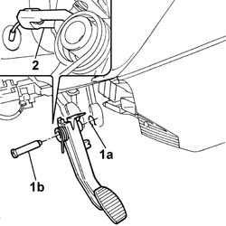

3330B26 clutch pedal - r+r
- Path
- Procedures > 33 BRAKING SYSTEM > 3330 HYDRAULIC BRAKING SYSTEM > 3330B PEDAL UNIT > 3330B26 clutch pedal - r+r
- Kind
- repair procedure (removal / refitting; the operation number is the code)
- Applies to
- all engines; all production periods
- Interactive page
- https://sloeber94.github.io/elrnDB-fPnd/en/#/2752727
Applies to: all engines; all production periods
 Removing
Removing
 Refitting
RefittingUnscrew the Body Computer (Facia Node) retaining bolts so it can be moved while removing the pin from the pedal unit.
1. Remove clip (1a) and withdraw pin (1b).
2. Disconnect the clutch release cable from the pedal.
Remove the clutch pedal.

Applies to: all engines; all production periods
Refitting
RemovingFit the clutch pedal and connect the release cable to the pedal.
Position the pin in its seat on the pedal mount and push home on the pedal mount.
Secure in position with the clip.
Tighten the Body Computer (Facia Node) bolts.